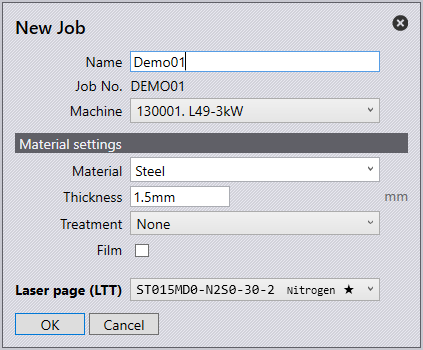
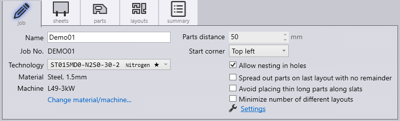
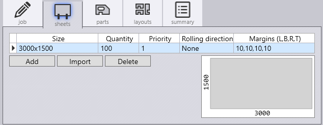
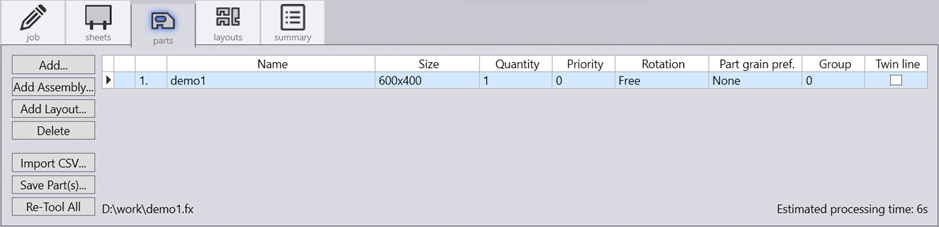
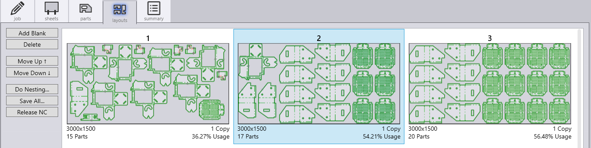
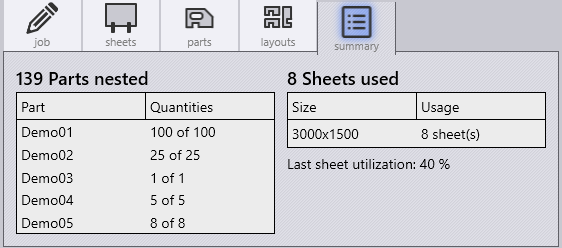

Create Job

-
To create a new job, select the New Job icon found on the left side of the launch screen or press Alt F N J.
-
Fill in the Name and Job No. for the given job.
-
The Machine drop-down menu will display the available machine list to run the job.
-
The Material drop-down menu will display the available materials to run the job.
-
The Thickness option is to specify the thickness of the sheet.
-
The Treatment drop-down menu is to specify whether the material has any treatment.
-
Select the Film checkbox if the material has a protective film.
-
The Laser page (LTT) drop-down is to select a technology table to use, this is useful if you wish to switch between different gas types on the machine.
-
Click OK to see pages for Job, Sheets, Parts, Layouts and Summary settings.
Keyboard shortcuts:
Job |
I |
Sheets |
S |
Parts |
P |
Layouts |
L |
Summary |
U |
Job J

-
The Technology drop-down menu allows you to specify which technology table to be used. This is useful to switch between different gas types for the machine.
-
Change Material and Machine to modify the material and machine being used.
-
The part distance section is used to specify the minimum distance between parts in a layout.
-
The start corner section is to specify the sheet start corner for nesting.
-
Select allow nesting in holes checkbox for parts to be nested within holes.
-
Select spread out parts on last layout with no remainder check box to spread out parts as much as possible on the sheet to minimise the sheet usage.
-
Enable avoid placing thin long parts along slats to reduce the possibility of having thin long parts along slats as they are more likely to tilt or fall-through, this will nest long thin parts across slats.
-
Enable minimise number of different layouts to minimise the number of layouts created and increase the packing of all other sheets used.
Sheets S
In the sheets page, the user is able to edit the settings of the raw material.

The add option will add a new sheet. Choosing to import a sheet, the user can select 2D geometry files (.dxf .geo or .fx) which defines the outline and pre-cut holes of the sheet. The 2D geometry files must contain exactly one outer contour. It can also contain some inner contours which will be treated as pre-cut holes. When nesting, the software will ensure that no parts are intersecting with the defined pre-cut holes. A preview of the imported sheet geometry is shown at the right bottom corner of the sheets tab. The delete option will delete a sheet from the list.
-
The size section is to specify the width and height of the sheet.
-
Quantity is the total number of this specific sheet size the business has.
-
The priority section is to prioritise certain sheet sizes over others to be used for nesting, sheets with lower priority number will be used first.
-
The Rolling Direction section is to specify the grain direction of the sheet.
-
Enter the margins from the edge of the sheet (Left, Bottom, Right and Top).
Parts P

-
The add button allows you to add one or more part files. Files can also be dragged and dropped in to this tab.
-
Add Assembly… option is used to import an assembly file and all the parts are added to a job.
-
Add Layout… option imports .dxf files.
-
The Import CSV… button will Add parts from a CSV file.
-
Re-tool All will recompute nesting of all parts.
-
Quantity is the required quantity of the part. A minimum and a maximum quantity for the part can be stated by separating the two values with a hyphen. For example, 20-24 means at least 20 copies of this part will be nested, but not more than 24.
-
Parts with lower priority number are preferably nested before parts of a higher priority number. Parts with priority number of 0 have opposite effect. They are of least priority.
-
Rotation is the rotation angle to be used in the nest.
-
Part grain preference is the required grain direction on the part. Select None for no preference. While nesting, the software will place the part in only the orientation that will give the required grain of the part. Rolling direction of the sheet(s) in the Sheets tab must also be specified.
-
Parts with identical group number are placed together in the nesting. If there is no preference, lets say '0' for all parts, they are mixed together in the nesting layout.
-
The twinline checkbox is to enable whether two parts can be cut using a common line.
Layouts L
The Layouts page displays part nest information along with options to edit the same.

-
The Add Blank option will add an empty sheet to the layouts page and the Delete option will remove selected layouts.
-
Move Up and Move Down selection will re-arrange the order of the selected layout. selection will move the order of the selected layout down.
-
The Do Nesting… option will start nesting the parts into layouts. If changes have been made to the parts, the layouts will need to be deleted and re-nested.
-
Save All… saves all layouts into individual .fxlyt files.
-
Release NC will generate and save NC code and reports for all layouts.
Summary U
The Summary page lists out the overall parts and sheets usage.

The left side shows the total number of parts nested, as well as the individual quantities of parts nested. The right side shows the total number of sheets used, as well as the individual sheet size quantities used. This section will also state the percentage of sheet utilisation.